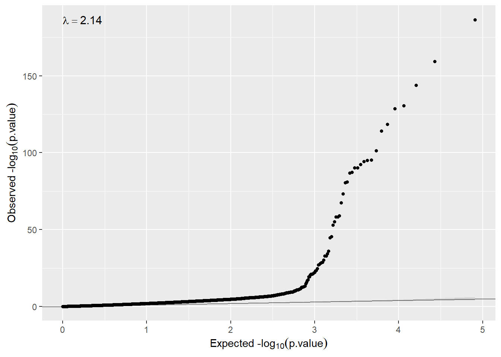

5 Differential gene expression (DGE) analysis
Let us illustrate how to perform transcriptomic data analysis using data from TCGA project. We have uploaded to the opal server a resource called tcga_liver whose URL is http://duffel.rail.bio/recount/TCGA/rse_gene_liver.Rdata which is available through the recount project. This resource contains the RangeSummarizedExperiment with the RNAseq profiling of liver cancer data from TCGA. Next, we illustrate how a differential expression analysis to compare RNAseq profiling of women vs men (variable gdc_cases.demographic.gender). The DGE analysis is normally performed using limma package. In that case, as we are analyzing RNA-seq data, limma + voom method will be required.
Let us start by creating the connection to the opal server:
builder <- newDSLoginBuilder()
builder$append(server = "study1", url = "https://opal-demo.obiba.org",
user = "dsuser", password = "P@ssw0rd",
resource = "RSRC.tcga_liver", profile = "omics")
logindata <- builder$build()
conns <- datashield.login(logins = logindata, assign = TRUE,
symbol = "res")##
## Logging into the collaborating servers##
## Assigning resource data...Then, let us coerce the resource to a RangedSummarizedExperiment which is the type of object that is available in the recount project.
datashield.assign.expr(conns, symbol = "rse",
expr = quote(as.resource.object(res)))
ds.class("rse")## $study1
## [1] "RangedSummarizedExperiment"
## attr(,"package")
## [1] "SummarizedExperiment"The number of features and samples can be inspected by
ds.dim("rse")## $`dimensions of rse in study1`
## [1] 58037 424
##
## $`dimensions of rse in combined studies`
## [1] 58037 424And the names of the features using the same function used in the case of analyzing an ExpressionSet
name.features <- ds.featureNames("rse")
lapply(name.features, head)## $study1
## [1] "ENSG00000000003.14" "ENSG00000000005.5" "ENSG00000000419.12"
## [4] "ENSG00000000457.13" "ENSG00000000460.16" "ENSG00000000938.12"Also the covariate names can be inspected by
name.vars <- ds.featureData("rse")
lapply(name.vars, head, n=15)## $study1
## [1] "project"
## [2] "sample"
## [3] "experiment"
## [4] "run"
## [5] "read_count_as_reported_by_sra"
## [6] "reads_downloaded"
## [7] "proportion_of_reads_reported_by_sra_downloaded"
## [8] "paired_end"
## [9] "sra_misreported_paired_end"
## [10] "mapped_read_count"
## [11] "auc"
## [12] "sharq_beta_tissue"
## [13] "sharq_beta_cell_type"
## [14] "biosample_submission_date"
## [15] "biosample_publication_date"We can visualize the levels of the variable having gender information that will be our condition (i.e., we are interested in obtaining genes that are differentially expressed between males and females)
ds.table1D("rse$gdc_cases.demographic.gender")## Warning: 'ds.table1D' is deprecated.
## Use 'ds.table' instead.
## See help("Deprecated")## $counts
## rse$gdc_cases.demographic.gender
## female 143
## male 281
## Total 424
##
## $percentages
## rse$gdc_cases.demographic.gender
## female 33.73
## male 66.27
## Total 100.00
##
## $validity
## [1] "All tables are valid!"We have implemented a function called ds.RNAseqPreproc() to perform RNAseq data pre-processing that includes:
- transforming data into log2 CPM units
- filtering lowly-expressed genes
- data normalization
ds.RNAseqPreproc('rse', group= 'gdc_cases.demographic.gender',
newobj.name = 'rse.pre')Note that it is recommended to indicate the grouping variable (i.e., condition). Once data have been pre-processed, we can perform differential expression analysis. Notice how dimensions have changed given the fact that we have removed genes with low expression which are expected to do not be differentially expressed.
ds.dim('rse')## $`dimensions of rse in study1`
## [1] 58037 424
##
## $`dimensions of rse in combined studies`
## [1] 58037 424ds.dim('rse.pre')## $`dimensions of rse.pre in study1`
## [1] 40363 424
##
## $`dimensions of rse.pre in combined studies`
## [1] 40363 424The differential expression analysis is ´dsOmicsClient/dsOmics´ is implemented in the funcion ds.limma(). This functions runs a limma-pipeline for microarray data and for RNAseq data allows:
- voom + limma
- DESeq2
- edgeR
We recommend to use the voom + limma pipeline proposed here given its versatility and that limma is much faster than DESeq2 and edgeR. By default, the function consider that data are obtained from a microarray experiment (type.data = "microarray"). Therefore, as we are analyzing RNAseq data, we much indicate that type.data = "RNAse"
ans.gender <- ds.limma(model = ~ gdc_cases.demographic.gender,
Set = "rse.pre", type.data = "RNAseq")The top differentially expressed genes can be visualized by:
ans.gender## $study1
## # A tibble: 40,363 x 7
## id n beta SE t P.Value adj.P.Val
## <chr> <int> <dbl> <dbl> <dbl> <dbl> <dbl>
## 1 ENSG00000274655.1 424 -12.4 0.0761 -52.1 2.74e-187 1.11e-182
## 2 ENSG00000270641.1 424 -10.2 0.461 -43.8 5.21e-160 1.05e-155
## 3 ENSG00000229807.10 424 -11.0 0.0603 -39.5 1.08e-144 1.45e-140
## 4 ENSG00000277577.1 424 -11.3 0.0651 -36.0 2.27e-131 2.29e-127
## 5 ENSG00000233070.1 424 10.9 0.0885 35.5 1.85e-129 1.49e-125
## 6 ENSG00000260197.1 424 10.2 0.118 32.9 3.72e-119 2.50e-115
## 7 ENSG00000213318.4 424 11.4 0.128 31.9 5.57e-115 3.21e-111
## 8 ENSG00000278039.1 424 -7.78 0.0812 -28.8 3.85e-102 1.94e- 98
## 9 ENSG00000067048.16 424 9.62 0.0894 27.4 4.72e- 96 2.12e- 92
## 10 ENSG00000131002.11 424 11.4 0.0924 27.3 9.63e- 96 3.89e- 92
## # ... with 40,353 more rows
##
## attr(,"class")
## [1] "dsLimma" "list"We can verify whether the distribution of the observed p-values are the ones we expect in this type of analyses
hist(ans.gender$study1$P.Value, xlab="Raw p-value gender effect",
main="", las=1, cex.lab=1.5, cex.axis=1.2, col="gray")We can also check whether there is inflation just executing
qqplot(ans.gender$study1$P.Value)
So, in that case, the model needs to remove unwanted variability (\(\lambda>2\)). If so, we can use surrogate variable analysis just changing the argument sva=TRUE
ans.gender.sva <- ds.limma(model = ~ gdc_cases.demographic.gender,
Set = "rse.pre", type.data = "RNAseq",
sva = TRUE)Now the inflation has dramatically been reduced (\(\lambda>1.12\))
qqplot(ans.gender.sva$study1$P.Value)
We can add annotation to the output that is available in our RSE object. We can have access to this information by
ds.fvarLabels('rse.pre')## $study1
## [1] "chromosome" "start" "end" "width" "strand"
## [6] "gene_id" "bp_length" "symbol"
##
## attr(,"class")
## [1] "dsfvarLabels" "list"So, we can run
ans.gender.sva <- ds.limma(model = ~ gdc_cases.demographic.gender,
Set = "rse.pre", type.data = "RNAseq",
sva = TRUE, annotCols = c("chromosome"))The results are:
ans.gender.sva## $study1
## # A tibble: 40,363 x 8
## id n beta SE t P.Value adj.P.Val chromosome
## <chr> <int> <dbl> <dbl> <dbl> <dbl> <dbl> <chr>
## 1 ENSG00000274655.1 424 -12.4 0.0761 -52.1 2.74e-187 1.11e-182 chrX
## 2 ENSG00000270641.1 424 -10.2 0.461 -43.8 5.21e-160 1.05e-155 chrX
## 3 ENSG00000229807.10 424 -11.0 0.0603 -39.5 1.08e-144 1.45e-140 chrX
## 4 ENSG00000277577.1 424 -11.3 0.0651 -36.0 2.27e-131 2.29e-127 chrX
## 5 ENSG00000233070.1 424 10.9 0.0885 35.5 1.85e-129 1.49e-125 chrY
## 6 ENSG00000260197.1 424 10.2 0.118 32.9 3.72e-119 2.50e-115 chrY
## 7 ENSG00000213318.4 424 11.4 0.128 31.9 5.57e-115 3.21e-111 chr16
## 8 ENSG00000278039.1 424 -7.78 0.0812 -28.8 3.85e-102 1.94e- 98 chrX
## 9 ENSG00000067048.16 424 9.62 0.0894 27.4 4.72e- 96 2.12e- 92 chrY
## 10 ENSG00000131002.11 424 11.4 0.0924 27.3 9.63e- 96 3.89e- 92 chrY
## # ... with 40,353 more rows
##
## attr(,"class")
## [1] "dsLimma" "list"The function has another arguments that can be used to fit other type of models:
- sva: estimate surrogate variables
- annotCols: to add annotation available in the
- method: Linear regression (“ls”) or robust regression (“robust”) used in limma (
lmFit) - robust: robust method used for outlier sample variances used in limma (
eBayes) - normalization: normalization method used in the
voomtransformation (default “none”) - voomQualityWeights: should
voomQualityWeightsfunction be used instead ofvoom? (default FALSE) - big: should SmartSVA be used instead of SVA (useful for big sample size or when analyzing epigenome data. Default FALSE)
We have also implemented two other functions ds.DESeq2 and ds.edgeR that perform DGE analysis using DESeq2 and edgeR methods. This is the R code used to that purpose:
To be supplied
We close the DataSHIELD session by:
datashield.logout(conns)